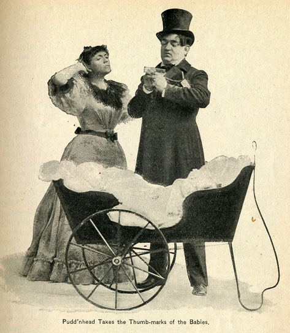
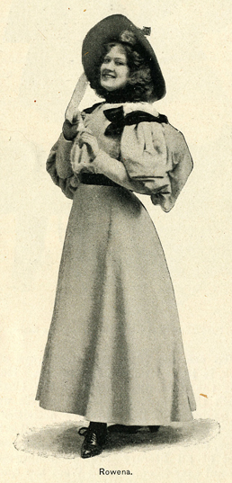
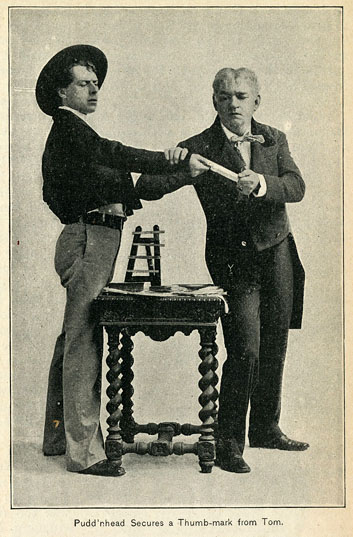
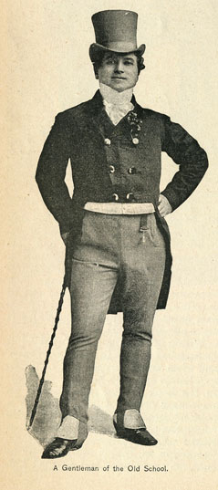
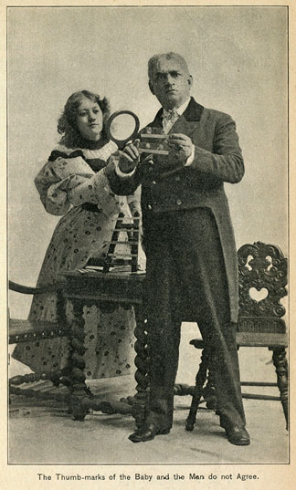
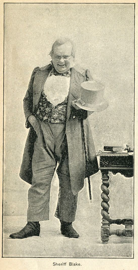
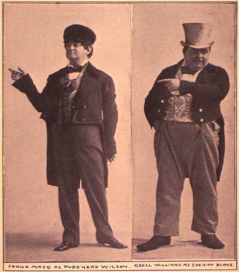
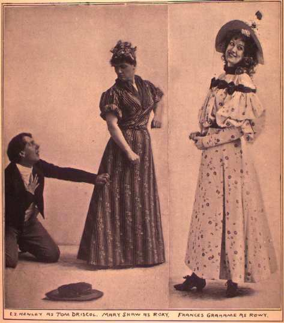

Original Production & Cast PhotographsThe two sets of photos below give us a kind of access to the way Frank Mayo and his company brought the scenes and characters of Pudd'nhead Wilson to life for the audiences of the original production of the play. The first seven photos were used to illustrate an article by Beaumont Fletcher entitled "PUDD'NHEAD WILSON" that appeared in the July 1895 issue of Godey's Magazine; the fingerprint motif figures very prominently in them. |
|
      |
|
These next six were cut out of another magazine, but I haven't been able to identify which one; they are among the many items collected in a homemade MT scrapbook in the Barrett Collection, titled Twainiana. The pictures repeat the point made in ads and reviews, that Mayo was the main feature of the play. The third one also indicates how both Roxy and Tom were played.   |